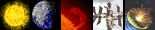
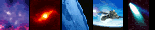
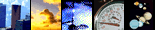
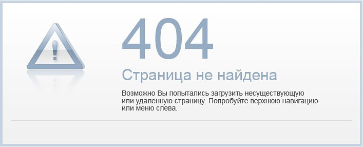
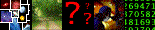

UTC (GMT) = 9:34:08
MSK = 12:34:08
JD = 2458102
Фаза луны = 13%
Информеры
Солнечная система

Солнце
Меркурий
Венера
Земля
Рекорды Земли
Луна
Марс
Пояс астероидов
Юпитер
Сатурн
Уран
Нептун
Плутон
Куаоар
Солнечная система
Сравнение планет
Межпланетная среда
Карты поверхности планет
Вселенная

Об астрономии
Экзопланеты
Кометы
Астероиды
Звезды
Созвездия
Черные дыры
Туманности
Метеориты
Галактики
Вселенная
Рекорды вселенной
Космос
Космодромы
КА Шаттл
Цифры
Станция МИР
МКС
Большой взрыв
История календаря
Метеорные потоки
Нейтрино
Уфология
Противосияние
Космические полеты
Двигатели
О сервере

Информеры
Наши баннеры
О сервере
Карта сервера
Ссылки
Правовая информация
Пишите нам
Литература
Отправить ссылку
Реклама на сервере

Информация
Фото космоса
Астрономический клуб
Глоссарий
Рефераты
Программы
Для рабочего стола
Screen Saver
Библиотека
Статьи
On-Line

Луна ON-LINE
Спутники Юпитера
Рейтинг
Интернет магазин
Объявления
Голосование
Космос видео
Ваш вес
Калькулятор
Видео
Звуки
Часовые пояса
Календарь
Тесты
Наблюдения
Прохождение Меркурия
Прохождение Венеры
Телескопы
Обсерватории
Лунный календарь
Солнечные затмения
Лунные затмения
Астрономические события
Хронология астрономии
Времена года
Широта-долгота
Астро праздники
Дополнительно
События в астрономии
Периодическая система
Музеи
Частушки о космосе
Это надо знать
Планетарии
Фото дня
Случайная картинка
Знаете ли вы что …
Анимация
Юлианский день
Греческий алфавит
Символы планет
Справочник